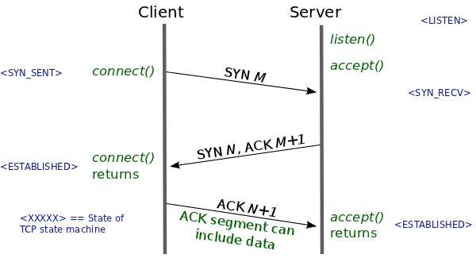

DoS and DDoS
CSE312 — Web Development
DoS
Denial of Service
- Denial of Service (DoS) Attack
- Prevent the server from being used by legitimate users
- General strategy
- Overwhelm the server with requests
- The requests use all of the servers resources
- Anyone attempting to use the app during the attack will not get responses from their requests
- Discuss: How would you attack a server?
DoS Prevention
- Constant back-and-forth between attacks and prevention
- Each side continuously evolves in an attempt to counter the other
- Preventing DoS attacks is difficult without affecting legitimate users
DoS -Brute Force
- Brute force attack
- Just mash refresh on the page… or
- Write code that will send a request
- Call that code in a loop
- Very simple attack
- Very simple prevention
- Write efficient code for your app
- The attack is effectively a load test
- Your app should be ready for a large number of users
DoS - Content-Length
- An attacker can get more sophisticated than brute force by playing with the Content-Length header
- How does your code buffer POST requests?
- Read the content length
- Read bytes from the TCP socket until you read that many bytes
- How does an attacker exploit this?
- Send a request with a Content-Length of 20
- Only send 19 bytes in the body
- Your code gets stuck in an infinite loop
- Send these requests in a loop to force the server to keep many connections open
DoS - Slow Send
- Next step of prevention:
- Set a timeout in your loop
- If you haven’t received any bytes after a fixed amount of time, close the connection
- Next evolution of the attack:
- Drip feed the content
- Instead of sending all the bytes right away, send them very slowly
- eg. Set Content-Length to 100,000, then send 10 bytes/second
- Prevents the timeout from activating
DoS - Slow Send
- Next evolution of the attack:
- Send bytes very slowly
- Next step of prevention:
- Set a timeout for the entire connection
- Prevention must distinguish between a slow send attack and a legitimate user with a slow connection
- Attackers evolve to accurately simulate a user with a slow connection
DoS - Slow Read
- A related attack is to read server responses very slowly
- Instead of reading 2048 whenever data is ready, read a few bytes/second
- Can take a very long time to read one response from the server
- Server must keep this TCP connection open the whole time
DoS - SYN Flood
- Recall the TCP three way handshake
- Client sends SYN
- Server responds with SYN + ACK
- Client responds with ACK

DoS - SYN Flood
- SYN Flood attack:
- Send a SYN to the server
- Stop.
- Very cheap to send a SYN packet
- Can send large numbers of them very quickly
- Server responds and waits for the ACK that never comes
- Server has lots of half-open connections until they time out
- Uses servers resources to keep these connections open
DoS Prevention: IP Blocking
- IP blocking
- If you see many requests, or other suspicious behavior, from the same IP address
- Block connections from that IP address
- If you see many requests, or other suspicious behavior, from the same IP address
- When using nginx as a reverse proxy:
- All requests will come from nginx (ie. localhost)
- Configure nginx to forward the real ip address of the client in a header
- Read the header in your server code to add IP blocking
DDoS
- So we block offending IP addresses
- Game Over. Eventually block all attacker IPs..
- IP addresses can be spoofed..
- But more problematic is the DDoS attack
DDoS
- Distributed Denial of Service (DDoS)
- Instead of using one machine to launch an attack..
- Use as many machines as you can access
- Launch any/all of the previous attacks from all machines
- Very difficult to prevent against since it can look much more like legitimate traffic from a variety of users
- Instead of using one machine to launch an attack..
DDoS and BotNets
- How does an attacker gain access to enough machines to launch a DDoS attack?
- Using a BotNet
- Viruses “Back in the day”
- Attacker infects your device with a virus
- The virus destroys your device and renders it unusable
- Do it for the lolz
- No real gain for the attacker
DDoS and BotNets
- Viruses in {{current_year}}
- Attacker infects your device with a virus
- The virus runs silently in the background waiting for commands from the attacker
- Infected machines become part of the attackers BotNet
- The attacker can now use the resources of all these machines
- Launch a DDoS attack from their BotNet
- Looks even more like legitimate users since many of them are legitimate users
- Launch a DDoS attack from their BotNet
- Lucrative for the attacker
- Can sell access to their BotNot
- Or just mine crypto..
- Can sell access to their BotNot